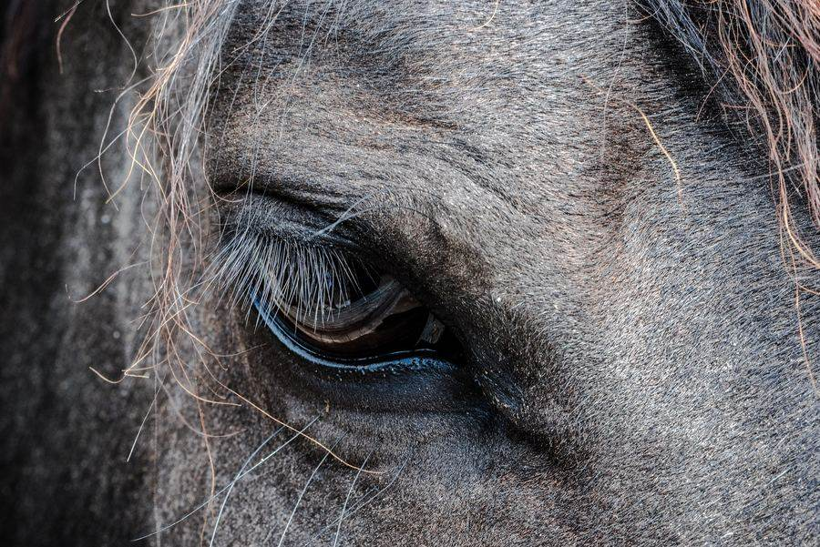

Positional Release
The foundation of my work. Tense or tender tissue is eased into a position of comfort and held until it releases, with no force involved. Especially suited to sensitive, sore, or reactive horses.
About positional release
Equine bodywork · Eustis, Florida
Positional release, sports massage, structural alignment, and aromatherapy, combined in each session to meet your horse where they are.

Whole-horse bodywork
Equine bodywork is hands-on care for the horse’s muscles, connective tissue, and skeletal structure. The goal is a horse that is comfortable in its own body: one that moves freely, works willingly, and recovers well.
My practice is built on positional release, a gentle technique that works through comfort rather than force. Alongside it I use sports massage, structural alignment, and aromatherapy, choosing and combining techniques based on what each horse presents that day. This approach is known as modality stacking: the right tools, in the right order, for the horse in front of me.
Services
The foundation of my work. Tense or tender tissue is eased into a position of comfort and held until it releases, with no force involved. Especially suited to sensitive, sore, or reactive horses.
About positional releaseTargeted massage to relieve muscle tension, encourage circulation, and support horses before and after training or competition.
About sports massageHands-on work that encourages the skeletal frame back toward balance, so the surrounding muscles no longer have to compensate.
About structural alignmentA horse-led approach to essential oils. Each scent is offered for your horse to accept or decline, and nothing is ever forced.
About aromatherapyWho I work with
Any horse can benefit from bodywork. These are the horses I see most often.

When to call
Horses can’t tell us where they are sore, but they show us. Common signs include:
Many of these signs can also indicate pain or lameness that requires a veterinary diagnosis. If your horse is lame, injured, or unwell, please contact your veterinarian before scheduling bodywork.
I’m glad to work alongside your vet as part of your horse’s care team.

Book a session
I’m based in Eustis, Florida. Reach out to check availability for your barn and to book your horse’s first visit.